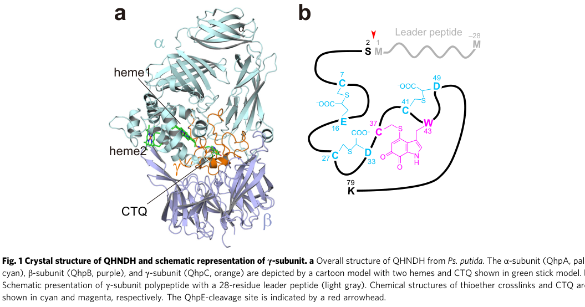

qhnDH (PP_3460, UniProt P0A181) encodes the ~9 kDa gamma catalytic subunit of the periplasmic quinohemoprotein amine dehydrogenase (QH-AmDH), an alpha-beta-gamma heterotrimer that oxidatively deaminates aliphatic primary amines (e.g. n-butylamine). The gamma subunit carries the protein-derived cysteine tryptophylquinone (CTQ) redox cofactor and extensive intrapeptidyl thioether crosslinks, providing the active-site redox center; electrons pass through the c-type hemes of the alpha subunit to periplasmic acceptors (cytochrome c550, azurin) and the respiratory chain. The catalytic phenotype belongs to the assembled holoenzyme rather than to the gamma subunit in isolation.
| GO Term | Evidence | Action | Reason |
|---|---|---|---|
|
GO:0016638
oxidoreductase activity, acting on the CH-NH2 group of donors
|
IEA
GO_REF:0000002 |
MARK AS OVER ANNOTATED |
Summary: This oxidoreductase parent is true but less specific than aliphatic amine dehydrogenase activity. Falcon deep research confirms the gamma subunit houses the cysteine tryptophylquinone (CTQ) redox cofactor that performs the CH-NH2 oxidation, so the parent term is correct but under-specified.
Reason: GO:0030058 (aliphatic amine dehydrogenase activity) captures the substrate class and dehydrogenase reaction more precisely than the CH-NH2 oxidoreductase parent.
Supporting Evidence:
file:PSEPK/qhnDH/qhnDH-uniprot.txt
oxidative deamination of a wide range of
file:PSEPK/qhnDH/qhnDH-deep-research-falcon.md
γ (~9 kDa) containing the redox-active quinone cofactor
file:PSEPK/qhnDH/qhnDH-goa.tsv
GO:0016638 oxidoreductase activity
|
|
GO:0030058
aliphatic amine dehydrogenase activity
|
IEA
GO_REF:0000116 |
ACCEPT |
Summary: Aliphatic amine dehydrogenase activity is the core molecular function for QhnDH. Falcon deep research confirms that the CTQ-bearing gamma subunit is the cofactor-bearing catalytic element of the heterotrimeric quinohemoprotein amine dehydrogenase that oxidatively deaminates aliphatic primary amines such as n-butylamine, with the catalytic phenotype realized by the whole holoenzyme complex.
Reason: UniProt and Rhea describe oxidative deamination of aliphatic amines, and falcon deep research independently supports this molecular function for the qhp gamma subunit.
Supporting Evidence:
file:PSEPK/qhnDH/qhnDH-uniprot.txt
Catalyzes the oxidative deamination of a wide range of
file:PSEPK/qhnDH/qhnDH-uniprot.txt
Reaction=an aliphatic amine + A + H2O
file:PSEPK/qhnDH/qhnDH-deep-research-falcon.md
Experimental and mechanistic literature most strongly supports activity toward **aliphatic primary amines**, with **n-butylamine** frequently used as the physiological/inducing substrate
file:PSEPK/qhnDH/qhnDH-goa.tsv
GO:0030058 aliphatic amine dehydrogenase activity
|
|
GO:0042597
periplasmic space
|
IEA
GO_REF:0000044 |
KEEP AS NON CORE |
Summary: The periplasmic-space annotation is correct for QhnDH. Falcon deep research confirms the quinohemoprotein amine dehydrogenase holoenzyme is periplasmic, consistent with its coupling to periplasmic electron-transfer partners (cytochrome c550, azurin) and the respiratory chain.
Reason: QhnDH is a periplasmic subunit, but location is secondary to the catalytic amine dehydrogenase activity.
Supporting Evidence:
file:PSEPK/qhnDH/qhnDH-uniprot.txt
SUBCELLULAR LOCATION: Periplasm
file:PSEPK/qhnDH/qhnDH-deep-research-falcon.md
QHNDH is described as **periplasmic** in Gram-negative bacteria, consistent with its use of periplasmic electron transfer partners and respiratory chain coupling
file:PSEPK/qhnDH/qhnDH-goa.tsv
GO:0042597 periplasmic space
|
|
GO:0030058
aliphatic amine dehydrogenase activity
|
ISS
GO_REF:0000024 |
ACCEPT |
Summary: The ISS aliphatic amine dehydrogenase annotation is consistent with the Rhea-supported IEA row. Falcon deep research supports assigning aliphatic amine dehydrogenase activity to the conserved qhp gamma subunit by homology across the widely distributed quinohemoprotein amine dehydrogenase family.
Reason: The homologous P. putida QH-AmDH entry (P0A182) supports the same aliphatic amine dehydrogenase activity, reinforced by falcon deep research on the conserved qhp gamma subunit.
Supporting Evidence:
file:PSEPK/qhnDH/qhnDH-uniprot.txt
EC=1.4.9.-
file:PSEPK/qhnDH/qhnDH-deep-research-falcon.md
catalyzes the **oxidative deamination of primary amines**
file:PSEPK/qhnDH/qhnDH-goa.tsv
GO:0030058 aliphatic amine dehydrogenase activity
|
|
GO:0042597
periplasmic space
|
ISS
GO_REF:0000024 |
KEEP AS NON CORE |
Summary: The ISS periplasm annotation is consistent with the UniProt subcellular-location annotation and with falcon deep research describing the holoenzyme as a periplasmic, inducible enzyme system.
Reason: Periplasmic localization is correct context for QhnDH but non-core relative to catalytic activity.
Supporting Evidence:
file:PSEPK/qhnDH/qhnDH-uniprot.txt
SUBCELLULAR LOCATION: Periplasm
file:PSEPK/qhnDH/qhnDH-deep-research-falcon.md
QHNDH is described as **periplasmic** in Gram-negative bacteria, consistent with its use of periplasmic electron transfer partners and respiratory chain coupling
file:PSEPK/qhnDH/qhnDH-goa.tsv
GO:0042597 periplasmic space
|
Q: Which aliphatic amines are physiological substrates for the KT2440 QH-AmDH complex?
Experiment: Reconstitute the QH-AmDH complex and measure activity across monoamine and diamine substrates with the physiological azurin-like electron acceptor.
Type: enzyme substrate panel
The research report should be a detailed narrative explaining the function, biological processes, and localization of the gene product. Citations should be given for all claims.
You should prioritize authoritative reviews and primary scientific literature when conducting research. You can supplement
this with annotations you find in gene/protein databases, but these can be outdated or inaccurate.
We are specifically interested in the primary function of the gene - for enzymes, what reaction is catalyzed, and what is the substrate specificity? For transporters, what is the substrate? For structural proteins or adapters, what is the broader structural role? For signaling molecules, what is the role in the pathway.
We are interested in where in or outside the cell the gene product carries out its function.
We are also interested in the signaling or biochemical pathways in which the gene functions. We are less interested in broad pleiotropic effects, except where these elucidate the precise role.
Include evidence where possible. We are interested in both experimental evidence as well as inference from structure, evolution, or bioinformatic analysis. Precise studies should be prioritized over high-throughput, where available.
The UniProt target (P0A181) is annotated as quinohemoprotein amine dehydrogenase subunit gamma (~9 kDa) from Pseudomonas putida KT2440. In the primary literature, this γ-subunit is most commonly referred to as QhpC, encoded within the conserved qhp operon that also carries the structural genes for the α- and β-subunits (qhpA/qhpB) and multiple biogenesis factors (qhpD/E/F/G/R). The defining features match the UniProt description: a small (~9 kDa) subunit containing the protein-derived quinone cofactor CTQ and extensive intrapeptidyl crosslinks, functioning as part of an αβγ heterotrimeric periplasmic amine dehydrogenase. (oozeki2021functionalandstructural pages 1-2, 俊範2021biochemicalandstructural pages 8-14, nakai2012anunusualsubtilisinlike pages 1-2)
QHNDH is a periplasmic, inducible αβγ heterotrimeric oxidoreductase found in Gram-negative bacteria that catalyzes the oxidative deamination of primary amines used as carbon/energy sources. The enzyme is described as: α (~60 kDa) containing two c-type hemes, β (~37–40 kDa), and γ (~9 kDa) containing the redox-active quinone cofactor cysteine tryptophylquinone (CTQ). (oozeki2021functionalandstructural pages 1-2, 俊範2021biochemicalandstructural pages 8-14, nakai2012anunusualsubtilisinlike pages 1-2)
The qhnDH/P0A181 protein corresponds functionally to the γ-subunit: a small, heavily post-translationally modified peptide that bears CTQ and forms the core redox center for substrate oxidation within the holoenzyme complex. (oozeki2021functionalandstructural pages 1-2, 俊範2021biochemicalandstructural pages 8-14)
CTQ is part of a broader class of protein-derived (“built-in”) redox cofactors, where catalytic moieties arise from posttranslational modification and/or crosslinking of amino acid side chains. A recent authoritative review highlights the rapid expansion in known protein-derived cofactor chemistries—reporting a surveyed list of 38 distinct types—and emphasizes that high-resolution structural methods remain critical because current structure predictors may miss such modifications. (graciano2025proteinderivedcofactorschemical pages 2-4)
QHNDH catalyzes oxidative deamination of primary amines. One explicit stoichiometry reported for QHNDH is:
RCH2NH3+ + H2O → RCHO + NH4+ + 2H+ + 2e− (俊範2021biochemicalandstructural pages 8-14)
While qhnDH encodes only the γ-subunit, its CTQ cofactor is the key redox center enabling this chemistry in the mature αβγ complex. (俊範2021biochemicalandstructural pages 8-14, nakai2012anunusualsubtilisinlike pages 1-2)
Experimental and mechanistic literature most strongly supports activity toward aliphatic primary amines, with n-butylamine frequently used as the physiological/inducing substrate. Some descriptions also include oxidation of benzylamine among primary amines. (nakai2012anunusualsubtilisinlike pages 1-2, 俊範2021biochemicalandstructural pages 8-14)
High-resolution structural work proposed that substrates attack the CTQ cofactor (site proposed at CTQ O-6) and that catalysis proceeds via Schiff-base chemistry (substrate Schiff base → product Schiff base) with a carbanion intermediate and a candidate catalytic base (Asp) positioned in the active site environment. (datta2001structureofa pages 5-5)
Across the mature QHNDH heterotrimer:
- γ-subunit (qhnDH/QhpC-like): contains CTQ and multiple stabilizing thioether crosslinks. (oozeki2021functionalandstructural pages 1-2, nakai2012anunusualsubtilisinlike pages 1-2)
- α-subunit (QhpA): contains two covalently bound c-type hemes for electron transfer to external acceptors. (oozeki2021functionalandstructural pages 1-2, nakai2012anunusualsubtilisinlike pages 1-2)
This division of labor supports annotation of qhnDH as the CTQ-bearing redox/catalytic subunit component, but not as a complete, standalone enzyme. (oozeki2021functionalandstructural pages 1-2, 俊範2021biochemicalandstructural pages 8-14)
Electrons generated at CTQ are transferred through the hemes in the α-subunit to external acceptors such as cytochrome c550 and azurin, and ultimately to oxygen via the respiratory chain. (nakai2012anunusualsubtilisinlike pages 1-2, 俊範2021biochemicalandstructural pages 8-14)
Electrochemical/spectroelectrochemical characterization provides quantitative evidence for internal electron transfer ordering:
- Midpoint potentials assigned to the two hemes and CTQ were approximately 235 mV, 149 mV, and 65 mV, respectively. (ikeda2004anovelelectrochemical pages 4-6)
In mediated bioelectrocatalysis using cytochrome c-550 as physiological partner, one analysis reported kcat ≈ 4.5 s−1 and Km ≈ 1.0 × 10−7 M for the cytochrome c-550 interaction/turnover context studied. (ikeda2004anovelelectrochemical pages 6-7)
QHNDH is described as periplasmic in Gram-negative bacteria, consistent with its use of periplasmic electron transfer partners and respiratory chain coupling. (nakai2012anunusualsubtilisinlike pages 1-2, oozeki2021functionalandstructural pages 1-2)
The qhp system is organized as an operon including qhpA/B/C (α/β/γ subunits) plus accessory genes qhpD/E/F/G/R, which collectively enable CTQ biogenesis, processing, export, and regulation; transcriptional activation is reported to be mediated by QhpR upon binding long-chain primary amines such as n-butylamine. (俊範2021biochemicalandstructural pages 14-20)
The most substantial “modern” advance relevant to functional annotation is that the CTQ-bearing γ-subunit is not active when translated; it is produced via a multi-enzyme, multistep maturation pathway:
Visual support for the γ-subunit location within the heterotrimer and for the CTQ/crosslink architecture and biogenesis machinery is provided by figure panels from Oozeki et al. (Nature Communications, Feb 2021). (oozeki2021functionalandstructural media 32ec60b6, oozeki2021functionalandstructural media 4a69fa5d, oozeki2021functionalandstructural media 4e2048c8)
Direct 2023–2024 primary studies specifically on Pseudomonas putida KT2440 qhnDH/P0A181 were not retrieved via the available tool searches; therefore, this report relies on:
- Foundational structural/mechanistic work (PNAS 2001), (datta2001structureofa pages 5-5)
- Biogenesis/processing studies that define γ-subunit maturation steps (JBC 2012; Nat Commun 2021), (nakai2012anunusualsubtilisinlike pages 1-2, oozeki2021functionalandstructural pages 1-2)
- A recent (2023) catabolic-network review that references the CTQ/QHNDH-type systems in broader metabolic context (tool retrieved but did not yield extractable qhnDH-specific evidence in the scanned excerpts).
Nevertheless, the 2021 mechanistic/structural clarification of QhpG-catalyzed Trp dihydroxylation remains the most relevant “recent” step-change for functional annotation of qhnDH-like γ-subunits because it converts an earlier “putative oxidation” step into a defined enzymatic transformation. (oozeki2021functionalandstructural pages 1-2, 俊範2021biochemicalandstructural pages 33-38)
QHNDH has been used as a model oxidoreductase for advanced electrochemical methods (mediator-assisted spectroelectrochemistry, mediated bioelectrocatalysis), enabling assignment of CTQ/heme redox potentials and kinetic evaluation of electron transfer to cytochrome c550. (ikeda2004anovelelectrochemical pages 4-6, ikeda2004anovelelectrochemical pages 6-7)
Mechanistic work on the qhp system has motivated biotechnological use of biogenesis enzymes (e.g., QhpD and QhpE) to prepare noncanonical crosslinked/cyclic peptide products (an emerging application direction rather than a mature industrial implementation). (俊範2021biochemicalandstructural pages 122-129)
No evidence of commercialized biosensor products or industrial-scale biocatalytic deployment specifically using qhnDH/P0A181 was identified in the retrieved sources; thus, application statements here are limited to documented experimental implementations. (ikeda2004anovelelectrochemical pages 6-7, 俊範2021biochemicalandstructural pages 122-129)
From a gene-annotation perspective, qhnDH/P0A181 should be curated as:
1. A γ-subunit component (not a complete enzyme on its own) of a periplasmic QHNDH system that oxidizes primary amines, with CTQ serving as the active-site redox cofactor. (俊範2021biochemicalandstructural pages 8-14, nakai2012anunusualsubtilisinlike pages 1-2)
2. A protein that is only functional after extensive posttranslational maturation (thioether crosslinking, Trp oxygenation, leader peptide processing) orchestrated by the qhp operon accessory genes. (oozeki2021functionalandstructural pages 1-2, nakai2012anunusualsubtilisinlike pages 1-2)
3. A representative of a broader, fast-growing class of protein-derived cofactor enzymes, where the “cofactor chemistry” is encoded genetically but realized posttranslationally—an area where reviews emphasize the need for structural/chemical validation beyond sequence-based predictions. (graciano2025proteinderivedcofactorschemical pages 2-4)
The following table consolidates key functional, mechanistic, localization, and quantitative parameters for qhnDH/P0A181.
| Feature | What is known | Key evidence/source (citation id) | Notes/implications |
|---|---|---|---|
| Protein identity / size | qhnDH (UniProt P0A181) matches the QH-AmDH/QHNDH γ-subunit-equivalent in the qhp system: a small ~9 kDa polypeptide; homologous QhpC is reported as ~82 aa / ~9 kDa. | (oozeki2021functionalandstructural pages 1-2, 俊範2021biochemicalandstructural pages 8-14) | The literature more often uses qhpC nomenclature than qhnDH; function assignment is strongest by homology to the conserved QHNDH γ-subunit. |
| Primary molecular role | The γ-subunit is the cofactor-bearing catalytic subunit element of quinohemoprotein amine dehydrogenase, housing the redox cofactor used for substrate oxidation while associating with α and β subunits in the mature heterotrimer. | (oozeki2021functionalandstructural pages 1-2, 俊範2021biochemicalandstructural pages 8-14, nakai2012anunusualsubtilisinlike pages 1-2) | For P0A181, the most defensible annotation is not a standalone enzyme but the γ component of a multisubunit periplasmic amine dehydrogenase. |
| Cofactor: CTQ | The γ-subunit contains cysteine tryptophylquinone (CTQ), a protein-derived quinone cofactor formed from a Cys and Trp residue. In Paracoccus QhpC, CTQ derives from Cys37 and Trp43. | (oozeki2021functionalandstructural pages 1-2, 俊範2021biochemicalandstructural pages 8-14) | CTQ is the hallmark functional feature of this subunit family and is central to catalytic annotation. |
| Posttranslational modifications | Mature γ-subunit contains CTQ plus three additional intrapeptidyl thioether crosslinks (Cys-to-Asp/Glu), giving an unusually constrained fold around the cofactor. | (oozeki2021functionalandstructural pages 1-2, 俊範2021biochemicalandstructural pages 20-24, nakai2012anunusualsubtilisinlike pages 1-2) | These extensive PTMs are essential for proper folding, cofactor encagement, and activity. |
| Leader peptide / precursor processing | The nascent γ-subunit is synthesized with an N-terminal ~28-residue leader peptide that is required during maturation but must be proteolytically removed to generate active enzyme. | (oozeki2021functionalandstructural pages 1-2, nakai2012anunusualsubtilisinlike pages 1-2, nakai2012anunusualsubtilisinlike pages 9-10) | Presence of a leader peptide implies that UniProt sequence features may represent a precursor form rather than the mature periplasmic subunit. |
| Enzyme complex architecture | QHNDH is an αβγ heterotrimer: α ~60 kDa with two c-type hemes, β ~37–40 kDa, and γ ~9 kDa carrying CTQ. | (oozeki2021functionalandstructural pages 1-2, 俊範2021biochemicalandstructural pages 8-14, 俊範2021biochemicalandstructural pages 14-20) | Functional annotation of qhnDH should explicitly note dependence on the α-subunit hemes for downstream electron transfer. |
| Reaction catalyzed | QHNDH catalyzes oxidative deamination of primary amines: RCH2NH3+ + H2O → RCHO + NH4+ + 2H+ + 2e−. | (俊範2021biochemicalandstructural pages 8-14, nakai2012anunusualsubtilisinlike pages 1-2, graciano2025proteinderivedcofactorschemical pages 12-13) | The γ-subunit contributes the redox-active CTQ chemistry, but the catalytic phenotype belongs to the whole holoenzyme complex. |
| Substrate range / specificity | Reported substrates include various aliphatic primary amines, especially n-butylamine; some descriptions also include benzylamine among oxidized primary amines. | (俊範2021biochemicalandstructural pages 8-14, nakai2012anunusualsubtilisinlike pages 1-2) | Best-supported specificity is toward primary amines used in amine assimilation; substrate breadth may vary by species/homolog. |
| Catalytic mechanism | Structural/mechanistic work supports Schiff-base chemistry at CTQ, with substrate attack proposed at CTQ O-6 and a catalytic base candidate identified as Asp-33 in the active site environment. | (datta2001structureofa pages 5-5) | This provides mechanistic support for assigning the γ-subunit as the cofactor-bearing redox center. |
| Electron acceptors / electron flow | Electrons from reduced CTQ are transferred intramolecularly to the α-subunit hemes, then to external acceptors such as cytochrome c550 and azurin, and ultimately to oxygen in respiratory chains. | (俊範2021biochemicalandstructural pages 8-14, nakai2012anunusualsubtilisinlike pages 1-2, ikeda2004anovelelectrochemical pages 4-6) | This links qhnDH to periplasmic electron-transfer and amine catabolism rather than cytosolic nitrogen metabolism. |
| Cellular localization | QHNDH is a periplasmic, inducible enzyme system in Gram-negative bacteria; maturation includes export/translocation steps and assembly in the periplasm. | (oozeki2021functionalandstructural pages 1-2, 俊範2021biochemicalandstructural pages 8-14, nakai2012anunusualsubtilisinlike pages 1-2) | Localization is important for annotation: activity occurs outside the cytoplasm, consistent with respiratory electron transfer. |
| Operon / gene system | The conserved qhp operon includes structural genes qhpA/qhpB/qhpC and accessory genes qhpD/qhpE/qhpF/qhpG/qhpR. | (oozeki2021functionalandstructural pages 1-2, 俊範2021biochemicalandstructural pages 14-20) | This operon context is highly informative for validating gene identity in genome annotation. |
| qhpA role | qhpA encodes the α-subunit containing the two c-type hemes and participating in electron transfer; heme insertion occurs during maturation/assembly. | (oozeki2021functionalandstructural pages 1-2, 俊範2021biochemicalandstructural pages 14-20) | Neighboring heme-binding motifs in qhpA would strongly support a genuine QHNDH locus. |
| qhpB role | qhpB encodes the β-subunit (~37–40 kDa), a structural partner of the mature heterotrimer. | (oozeki2021functionalandstructural pages 1-2, 俊範2021biochemicalandstructural pages 14-20) | β is required for the intact holoenzyme but is not the principal cofactor-bearing subunit. |
| qhpC role | qhpC is the canonical name for the γ-subunit homolog: CTQ-bearing, heavily crosslinked, and leader-peptide processed. | (oozeki2021functionalandstructural pages 1-2, 俊範2021biochemicalandstructural pages 8-14) | P0A181 is most plausibly a qhpC-like protein despite the submitted symbol qhnDH. |
| qhpD role | qhpD encodes a radical SAM enzyme that installs the three Cys-to-Asp/Glu thioether crosslinks in QhpC before CTQ completion. | (oozeki2021functionalandstructural pages 1-2, 俊範2021biochemicalandstructural pages 14-20) | Radical-SAM-dependent crosslinking is a defining biosynthetic signature of this family. |
| qhpE role | qhpE encodes an unusual subtilisin-like serine protease that cleaves the γ-subunit leader peptide; disruption causes inactive QHNDH with unprocessed γ-subunit. | (oozeki2021functionalandstructural pages 1-2, nakai2012anunusualsubtilisinlike pages 1-2, nakai2012anunusualsubtilisinlike pages 9-10) | Strong experimental evidence supports qhpE as essential for biogenesis, not general proteolysis. |
| qhpF role | qhpF encodes an ABC transporter/export factor implicated in translocation of modified QhpC to the periplasm. | (俊範2021biochemicalandstructural pages 14-20) | Supports extracellular/periplasmic maturation pathway annotation. |
| qhpG role | qhpG encodes a flavoprotein monooxygenase (FAD-dependent) that catalyzes single-turnover dihydroxylation of the precursor Trp in crosslinked QhpC during CTQ biosynthesis. | (oozeki2021functionalandstructural pages 1-2, 俊範2021biochemicalandstructural pages 33-38, 俊範2021biochemicalandstructural pages 70-77) | One of the most important modern mechanistic findings for this system. |
| qhpR role | qhpR is a transcriptional regulator reported to activate qhp operon expression in response to long-chain primary amines such as n-butylamine. | (俊範2021biochemicalandstructural pages 14-20) | Places qhnDH within inducible amine-utilization regulation. |
| Electrochemical properties | Mediated spectroelectrochemistry assigned midpoint potentials of approximately 235 mV, 149 mV, and 65 mV to the two hemes and CTQ, respectively, supporting electron flow from CTQ to hemes. | (ikeda2004anovelelectrochemical pages 4-6) | These quantitative redox data help distinguish functional roles of cofactors within the complex. |
| Kinetic/electron-transfer data | Using cytochrome c-550 as physiological electron acceptor, electrochemical analysis reported kcat ≈ 4.5 s−1 and Km ≈ 1.0 × 10−7 M for the partner interaction/turnover context studied. | (ikeda2004anovelelectrochemical pages 6-7) | Useful as a benchmark for efficient periplasmic electron transfer, though values are for the enzyme system rather than isolated γ-subunit. |
| Recent conceptual developments | Recent work has clarified that CTQ biogenesis proceeds through a multistep pathway involving QhpD/QhpG/QhpE and ternary-complex interactions, rather than a single spontaneous oxidation event. | (oozeki2021functionalandstructural pages 1-2, 俊範2021biochemicalandstructural pages 122-129, 俊範2021biochemicalandstructural pages 70-77) | This is the main “current understanding” advance relevant to functional annotation. |
| Distribution / prevalence | The qhp/QHNDH system is described as widely distributed, with the operon reported in >1,300 species; a 2025 review also notes the surveyed number of distinct protein-derived cofactors has expanded to 38 types. | (oozeki2021functionalandstructural pages 1-2, graciano2025proteinderivedcofactorschemical pages 2-4) | The >1,300-species figure supports evolutionary conservation; the 38-cofactor statistic contextualizes CTQ within a rapidly expanding cofactor class. |
| Broader expert context | Recent expert review identifies CTQ as one of the recognized amino-acid-crosslinked quinone cofactors and places QHNDH among enzymes using protein-derived cofactors to expand catalytic chemistry. | (graciano2025proteinderivedcofactorschemical pages 11-12, graciano2025proteinderivedcofactorschemical pages 2-4) | Supports high-confidence annotation of qhnDH/P0A181 as a specialized cofactor-bearing redox protein subunit. |
| Application relevance | QHNDH has been used as a model system for electrochemical characterization of oxidoreductases; related biogenesis enzymes (QhpD/QhpE) have been suggested as tools to prepare novel cyclic peptides. | (ikeda2004anovelelectrochemical pages 6-7, 俊範2021biochemicalandstructural pages 122-129) | Real-world deployment appears more methodological/biotechnological than industrially mature for qhnDH itself. |
Table: This table summarizes the best-supported functional annotation for qhnDH/P0A181 as the qhpC-like gamma subunit of quinohemoprotein amine dehydrogenase. It integrates structural, mechanistic, localization, operon, and electrochemical evidence most useful for gene function curation.
References
(oozeki2021functionalandstructural pages 1-2): Toshinori Oozeki, Tadashi Nakai, Kazuki Kozakai, Kazuki Okamoto, Shun’ichi Kuroda, Kazuo Kobayashi, Katsuyuki Tanizawa, and Toshihide Okajima. Functional and structural characterization of a flavoprotein monooxygenase essential for biogenesis of tryptophylquinone cofactor. Nature Communications, Feb 2021. URL: https://doi.org/10.1038/s41467-021-21200-9, doi:10.1038/s41467-021-21200-9. This article has 7 citations and is from a highest quality peer-reviewed journal.
(俊範2021biochemicalandstructural pages 8-14): 大関， 俊範. Biochemical and structural studies of multistep. Unknown journal, 2021.
(nakai2012anunusualsubtilisinlike pages 1-2): Tadashi Nakai, Kazutoshi Ono, Shun'ichi Kuroda, Katsuyuki Tanizawa, and Toshihide Okajima. An unusual subtilisin-like serine protease is essential for biogenesis of quinohemoprotein amine dehydrogenase. Journal of Biological Chemistry, 287:6530-6538, Feb 2012. URL: https://doi.org/10.1074/jbc.m111.324756, doi:10.1074/jbc.m111.324756. This article has 14 citations and is from a domain leading peer-reviewed journal.
(graciano2025proteinderivedcofactorschemical pages 2-4): Angelica Graciano and Aimin Liu. Protein-derived cofactors: chemical innovations expanding enzyme catalysis. Chemical Society Reviews, 54:4502-4530, Mar 2025. URL: https://doi.org/10.1039/d4cs00981a, doi:10.1039/d4cs00981a. This article has 10 citations and is from a highest quality peer-reviewed journal.
(datta2001structureofa pages 5-5): Saumen Datta, Youichi Mori, Kazuyoshi Takagi, Katsunori Kawaguchi, Zhi-Wei Chen, Toshihide Okajima, Shun'ichi Kuroda, Tokuji Ikeda, Kenji Kano, Katsuyuki Tanizawa, and F. Scott Mathews. Structure of a quinohemoprotein amine dehydrogenase with an uncommon redox cofactor and highly unusual crosslinking. Proceedings of the National Academy of Sciences of the United States of America, 98:14268-14273, Nov 2001. URL: https://doi.org/10.1073/pnas.241429098, doi:10.1073/pnas.241429098. This article has 173 citations and is from a highest quality peer-reviewed journal.
(ikeda2004anovelelectrochemical pages 4-6): Tokuji Ikeda. A novel electrochemical approach to the characterization of oxidoreductase reactions. Chemical record, 4 3:192-203, Jan 2004. URL: https://doi.org/10.1002/tcr.20014, doi:10.1002/tcr.20014. This article has 19 citations and is from a peer-reviewed journal.
(ikeda2004anovelelectrochemical pages 6-7): Tokuji Ikeda. A novel electrochemical approach to the characterization of oxidoreductase reactions. Chemical record, 4 3:192-203, Jan 2004. URL: https://doi.org/10.1002/tcr.20014, doi:10.1002/tcr.20014. This article has 19 citations and is from a peer-reviewed journal.
(俊範2021biochemicalandstructural pages 14-20): 大関， 俊範. Biochemical and structural studies of multistep. Unknown journal, 2021.
(俊範2021biochemicalandstructural pages 33-38): 大関， 俊範. Biochemical and structural studies of multistep. Unknown journal, 2021.
(nakai2012anunusualsubtilisinlike pages 9-10): Tadashi Nakai, Kazutoshi Ono, Shun'ichi Kuroda, Katsuyuki Tanizawa, and Toshihide Okajima. An unusual subtilisin-like serine protease is essential for biogenesis of quinohemoprotein amine dehydrogenase. Journal of Biological Chemistry, 287:6530-6538, Feb 2012. URL: https://doi.org/10.1074/jbc.m111.324756, doi:10.1074/jbc.m111.324756. This article has 14 citations and is from a domain leading peer-reviewed journal.
(oozeki2021functionalandstructural media 32ec60b6): Toshinori Oozeki, Tadashi Nakai, Kazuki Kozakai, Kazuki Okamoto, Shun’ichi Kuroda, Kazuo Kobayashi, Katsuyuki Tanizawa, and Toshihide Okajima. Functional and structural characterization of a flavoprotein monooxygenase essential for biogenesis of tryptophylquinone cofactor. Nature Communications, Feb 2021. URL: https://doi.org/10.1038/s41467-021-21200-9, doi:10.1038/s41467-021-21200-9. This article has 7 citations and is from a highest quality peer-reviewed journal.
(oozeki2021functionalandstructural media 4a69fa5d): Toshinori Oozeki, Tadashi Nakai, Kazuki Kozakai, Kazuki Okamoto, Shun’ichi Kuroda, Kazuo Kobayashi, Katsuyuki Tanizawa, and Toshihide Okajima. Functional and structural characterization of a flavoprotein monooxygenase essential for biogenesis of tryptophylquinone cofactor. Nature Communications, Feb 2021. URL: https://doi.org/10.1038/s41467-021-21200-9, doi:10.1038/s41467-021-21200-9. This article has 7 citations and is from a highest quality peer-reviewed journal.
(oozeki2021functionalandstructural media 4e2048c8): Toshinori Oozeki, Tadashi Nakai, Kazuki Kozakai, Kazuki Okamoto, Shun’ichi Kuroda, Kazuo Kobayashi, Katsuyuki Tanizawa, and Toshihide Okajima. Functional and structural characterization of a flavoprotein monooxygenase essential for biogenesis of tryptophylquinone cofactor. Nature Communications, Feb 2021. URL: https://doi.org/10.1038/s41467-021-21200-9, doi:10.1038/s41467-021-21200-9. This article has 7 citations and is from a highest quality peer-reviewed journal.
(俊範2021biochemicalandstructural pages 122-129): 大関， 俊範. Biochemical and structural studies of multistep. Unknown journal, 2021.
(俊範2021biochemicalandstructural pages 20-24): 大関， 俊範. Biochemical and structural studies of multistep. Unknown journal, 2021.
(graciano2025proteinderivedcofactorschemical pages 12-13): Angelica Graciano and Aimin Liu. Protein-derived cofactors: chemical innovations expanding enzyme catalysis. Chemical Society Reviews, 54:4502-4530, Mar 2025. URL: https://doi.org/10.1039/d4cs00981a, doi:10.1039/d4cs00981a. This article has 10 citations and is from a highest quality peer-reviewed journal.
(俊範2021biochemicalandstructural pages 70-77): 大関， 俊範. Biochemical and structural studies of multistep. Unknown journal, 2021.
(graciano2025proteinderivedcofactorschemical pages 11-12): Angelica Graciano and Aimin Liu. Protein-derived cofactors: chemical innovations expanding enzyme catalysis. Chemical Society Reviews, 54:4502-4530, Mar 2025. URL: https://doi.org/10.1039/d4cs00981a, doi:10.1039/d4cs00981a. This article has 10 citations and is from a highest quality peer-reviewed journal.

id: P0A181
gene_symbol: qhnDH
product_type: PROTEIN
status: COMPLETE
taxon:
id: NCBITaxon:160488
label: Pseudomonas putida (strain ATCC 47054 / DSM 6125 / CFBP 8728 / NCIMB 11950 / KT2440)
description: qhnDH (PP_3460, UniProt P0A181) encodes the ~9 kDa gamma catalytic subunit of the periplasmic
quinohemoprotein amine dehydrogenase (QH-AmDH), an alpha-beta-gamma heterotrimer that oxidatively deaminates
aliphatic primary amines (e.g. n-butylamine). The gamma subunit carries the protein-derived cysteine
tryptophylquinone (CTQ) redox cofactor and extensive intrapeptidyl thioether crosslinks, providing the
active-site redox center; electrons pass through the c-type hemes of the alpha subunit to periplasmic
acceptors (cytochrome c550, azurin) and the respiratory chain. The catalytic phenotype belongs to the
assembled holoenzyme rather than to the gamma subunit in isolation.
existing_annotations:
- term:
id: GO:0016638
label: oxidoreductase activity, acting on the CH-NH2 group of donors
evidence_type: IEA
original_reference_id: GO_REF:0000002
review:
summary: This oxidoreductase parent is true but less specific than aliphatic amine dehydrogenase activity.
Falcon deep research confirms the gamma subunit houses the cysteine tryptophylquinone (CTQ) redox cofactor
that performs the CH-NH2 oxidation, so the parent term is correct but under-specified.
action: MARK_AS_OVER_ANNOTATED
reason: GO:0030058 (aliphatic amine dehydrogenase activity) captures the substrate class and dehydrogenase
reaction more precisely than the CH-NH2 oxidoreductase parent.
supported_by:
- reference_id: file:PSEPK/qhnDH/qhnDH-uniprot.txt
supporting_text: oxidative deamination of a wide range of
- reference_id: file:PSEPK/qhnDH/qhnDH-deep-research-falcon.md
supporting_text: γ (~9 kDa) containing the redox-active quinone cofactor
- reference_id: file:PSEPK/qhnDH/qhnDH-goa.tsv
supporting_text: "GO:0016638\toxidoreductase activity"
- term:
id: GO:0030058
label: aliphatic amine dehydrogenase activity
evidence_type: IEA
original_reference_id: GO_REF:0000116
review:
summary: Aliphatic amine dehydrogenase activity is the core molecular function for QhnDH. Falcon deep
research confirms that the CTQ-bearing gamma subunit is the cofactor-bearing catalytic element of the
heterotrimeric quinohemoprotein amine dehydrogenase that oxidatively deaminates aliphatic primary amines
such as n-butylamine, with the catalytic phenotype realized by the whole holoenzyme complex.
action: ACCEPT
reason: UniProt and Rhea describe oxidative deamination of aliphatic amines, and falcon deep research
independently supports this molecular function for the qhp gamma subunit.
supported_by:
- reference_id: file:PSEPK/qhnDH/qhnDH-uniprot.txt
supporting_text: Catalyzes the oxidative deamination of a wide range of
- reference_id: file:PSEPK/qhnDH/qhnDH-uniprot.txt
supporting_text: Reaction=an aliphatic amine + A + H2O
- reference_id: file:PSEPK/qhnDH/qhnDH-deep-research-falcon.md
supporting_text: Experimental and mechanistic literature most strongly supports activity toward **aliphatic
primary amines**, with **n-butylamine** frequently used as the physiological/inducing substrate
- reference_id: file:PSEPK/qhnDH/qhnDH-goa.tsv
supporting_text: "GO:0030058\taliphatic amine dehydrogenase activity"
- term:
id: GO:0042597
label: periplasmic space
evidence_type: IEA
original_reference_id: GO_REF:0000044
review:
summary: The periplasmic-space annotation is correct for QhnDH. Falcon deep research confirms the
quinohemoprotein amine dehydrogenase holoenzyme is periplasmic, consistent with its coupling to
periplasmic electron-transfer partners (cytochrome c550, azurin) and the respiratory chain.
action: KEEP_AS_NON_CORE
reason: QhnDH is a periplasmic subunit, but location is secondary to the catalytic amine dehydrogenase activity.
supported_by:
- reference_id: file:PSEPK/qhnDH/qhnDH-uniprot.txt
supporting_text: 'SUBCELLULAR LOCATION: Periplasm'
- reference_id: file:PSEPK/qhnDH/qhnDH-deep-research-falcon.md
supporting_text: QHNDH is described as **periplasmic** in Gram-negative bacteria, consistent with its
use of periplasmic electron transfer partners and respiratory chain coupling
- reference_id: file:PSEPK/qhnDH/qhnDH-goa.tsv
supporting_text: "GO:0042597\tperiplasmic space"
- term:
id: GO:0030058
label: aliphatic amine dehydrogenase activity
evidence_type: ISS
original_reference_id: GO_REF:0000024
review:
summary: The ISS aliphatic amine dehydrogenase annotation is consistent with the Rhea-supported IEA row.
Falcon deep research supports assigning aliphatic amine dehydrogenase activity to the conserved qhp
gamma subunit by homology across the widely distributed quinohemoprotein amine dehydrogenase family.
action: ACCEPT
reason: The homologous P. putida QH-AmDH entry (P0A182) supports the same aliphatic amine dehydrogenase
activity, reinforced by falcon deep research on the conserved qhp gamma subunit.
supported_by:
- reference_id: file:PSEPK/qhnDH/qhnDH-uniprot.txt
supporting_text: EC=1.4.9.-
- reference_id: file:PSEPK/qhnDH/qhnDH-deep-research-falcon.md
supporting_text: catalyzes the **oxidative deamination of primary amines**
- reference_id: file:PSEPK/qhnDH/qhnDH-goa.tsv
supporting_text: "GO:0030058\taliphatic amine dehydrogenase activity"
- term:
id: GO:0042597
label: periplasmic space
evidence_type: ISS
original_reference_id: GO_REF:0000024
review:
summary: The ISS periplasm annotation is consistent with the UniProt subcellular-location annotation and
with falcon deep research describing the holoenzyme as a periplasmic, inducible enzyme system.
action: KEEP_AS_NON_CORE
reason: Periplasmic localization is correct context for QhnDH but non-core relative to catalytic activity.
supported_by:
- reference_id: file:PSEPK/qhnDH/qhnDH-uniprot.txt
supporting_text: 'SUBCELLULAR LOCATION: Periplasm'
- reference_id: file:PSEPK/qhnDH/qhnDH-deep-research-falcon.md
supporting_text: QHNDH is described as **periplasmic** in Gram-negative bacteria, consistent with its
use of periplasmic electron transfer partners and respiratory chain coupling
- reference_id: file:PSEPK/qhnDH/qhnDH-goa.tsv
supporting_text: "GO:0042597\tperiplasmic space"
references:
- id: GO_REF:0000002
title: Gene Ontology annotation through association of InterPro records with GO terms
findings: []
- id: GO_REF:0000024
title: Manual transfer of experimentally-verified manual GO annotation data to orthologs by curator judgment of sequence
similarity
findings: []
- id: GO_REF:0000044
title: Gene Ontology annotation based on UniProtKB/Swiss-Prot Subcellular Location vocabulary mapping, accompanied by conservative
changes to GO terms applied by UniProt
findings: []
- id: GO_REF:0000116
title: Automatic Gene Ontology annotation based on Rhea mapping
findings: []
- id: file:PSEPK/qhnDH/qhnDH-uniprot.txt
title: UniProtKB reviewed entry for qhnDH
findings:
- supporting_text: Quinohemoprotein amine dehydrogenase catalytic subunit
reference_section_type: OTHER
- supporting_text: Heterotrimer of an alpha, a beta and a gamma subunit
reference_section_type: OTHER
- id: file:PSEPK/qhnDH/qhnDH-goa.tsv
title: QuickGO GOA annotations for qhnDH
findings:
- supporting_text: Quinohemoprotein amine dehydrogenase subunit gamma
reference_section_type: OTHER
- id: file:PSEPK/qhnDH/qhnDH-deep-research-falcon.md
title: Falcon deep research report for qhnDH (Pseudomonas putida KT2440)
findings:
- supporting_text: the redox-active quinone cofactor **cysteine tryptophylquinone (CTQ)**
reference_section_type: OTHER
- supporting_text: QHNDH is an **αβγ heterotrimer**
reference_section_type: OTHER
- supporting_text: the most defensible annotation is not a standalone enzyme but the γ component of a
multisubunit periplasmic amine dehydrogenase
reference_section_type: OTHER
- supporting_text: Electrons generated at CTQ are transferred through the hemes in the α-subunit to external
acceptors such as **cytochrome c550** and **azurin**
reference_section_type: OTHER
- supporting_text: transcriptional activation is reported to be mediated by **QhpR** upon binding long-chain
primary amines such as **n-butylamine**
reference_section_type: OTHER
core_functions:
- description: Periplasmic aliphatic amine dehydrogenase catalytic subunit. As the CTQ-bearing gamma subunit
of the QH-AmDH alpha-beta-gamma heterotrimer, it provides the active-site redox center for oxidative
deamination of aliphatic primary amines (e.g. n-butylamine), with electrons relayed via the alpha-subunit
hemes to periplasmic acceptors. The catalytic activity is realized by the assembled holoenzyme.
molecular_function:
id: GO:0030058
label: aliphatic amine dehydrogenase activity
supported_by:
- reference_id: file:PSEPK/qhnDH/qhnDH-uniprot.txt
supporting_text: Catalyzes the oxidative deamination of a wide range of
- reference_id: file:PSEPK/qhnDH/qhnDH-uniprot.txt
supporting_text: Reaction=an aliphatic amine + A + H2O
- reference_id: file:PSEPK/qhnDH/qhnDH-deep-research-falcon.md
supporting_text: the most defensible annotation is not a standalone enzyme but the γ component of a
multisubunit periplasmic amine dehydrogenase
proposed_new_terms: []
suggested_questions:
- question: Which aliphatic amines are physiological substrates for the KT2440 QH-AmDH complex?
suggested_experiments:
- description: Reconstitute the QH-AmDH complex and measure activity across monoamine and diamine substrates with the physiological
azurin-like electron acceptor.
experiment_type: enzyme substrate panel
{kind=link}